Walk-outs and the tale of the tape
Owner decision, 30 September: each machine rolls out through its venue gate with a card on screen, stats plus a strength and a weakness line, the player writing their own in the builder and the rivals getting written ones. Built on branch wave-d-walkout. Clips are real Godot renders at 874 x 402 proportions, 15 frames a second, from the capture tool.
What you get
- Before the hazard fly-past, the opponent comes out of its corner under its gate (the floods drop, the gate strip chases, the pyro fires, a follow spot picks it out), then the player's machine does the same. Each rolls onto its fight mark and stops with a small rock on its suspension, so the cut to the real machine is invisible.
- The card is a sheet of blueprint paper on the right: machine, roboteer, mass, drive, weapon, three whole-machine numbers (speed and hit on the builder's 1 to 5 scale, armour in kilograms), the head to head, and the two lines.
- The house bot gets a short shot in its corner with its own card in a first-visit career intro, and a small card top left when it comes out of its corner mid-fight.
- Tap anywhere skips straight to the drop, as before. Replays, events, the test arena and a quick restart get none.
- Presentation only. The machine on screen is a copy; the real one never leaves its mark and the tick clock is held. Fight hashes are identical with walk-outs full, short, quick, skipped halfway, or none.
Timings
| Fight | First time in the arena | After that |
|---|---|---|
| Career match | 2.2 s + 2.2 s, + 1.3 s house bot = 5.7 s added | 1.0 s + 1.0 s = 2.0 s added |
| Quick fight, ladder | 1.4 s + 1.4 s = 2.8 s added | 0.8 s + 0.8 s = 1.6 s added |
| Quick restart, replay, event, test arena, rumble | none | none |
Three arenas, in motion
The Yard
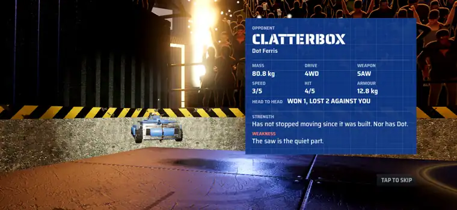
The Grinder
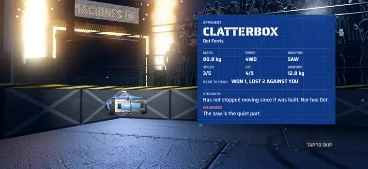
Coliseum
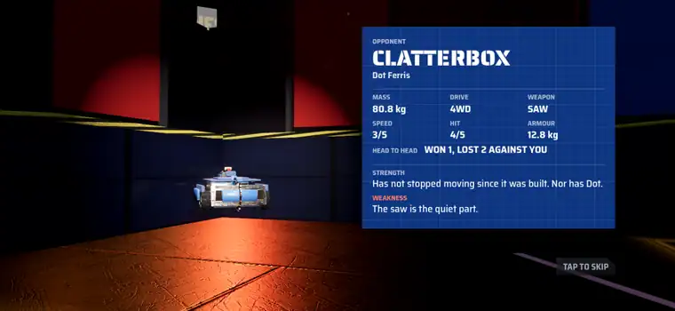
Stills
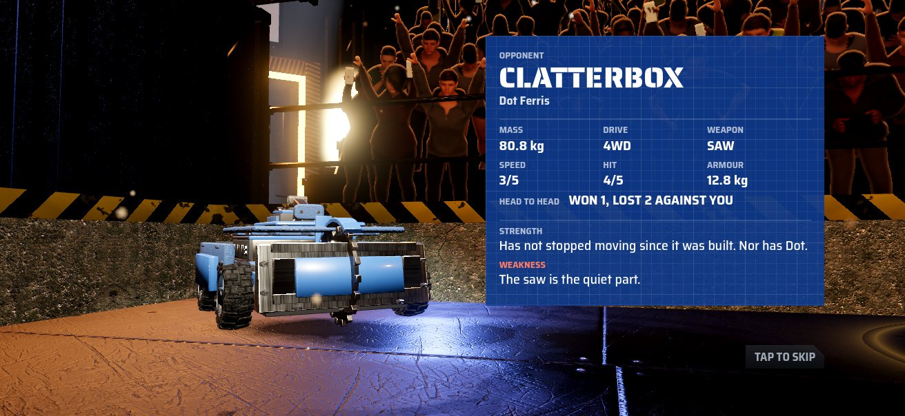
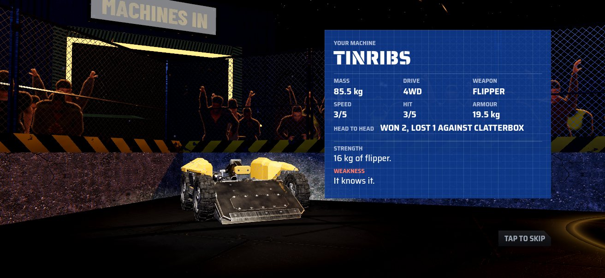

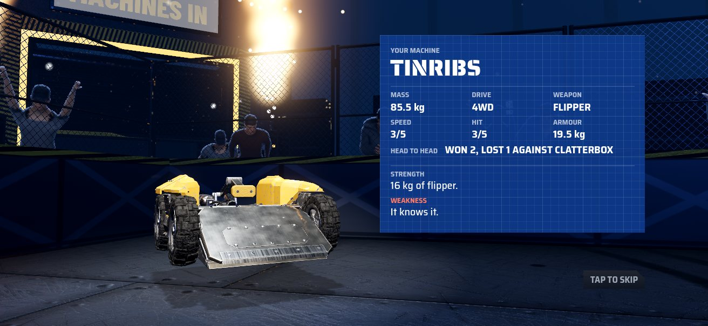
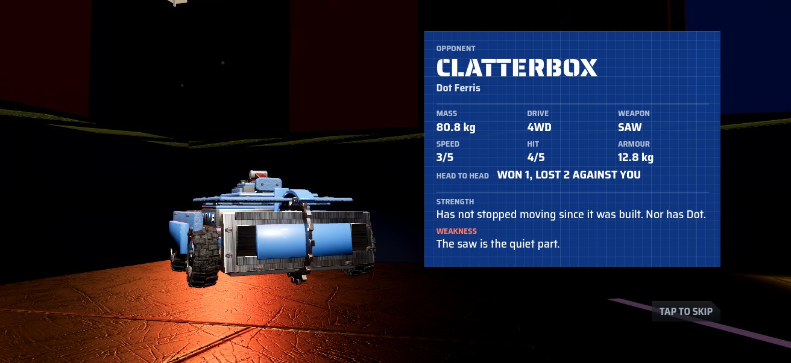
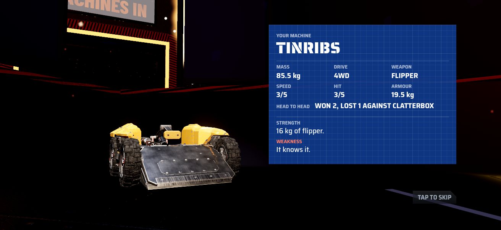
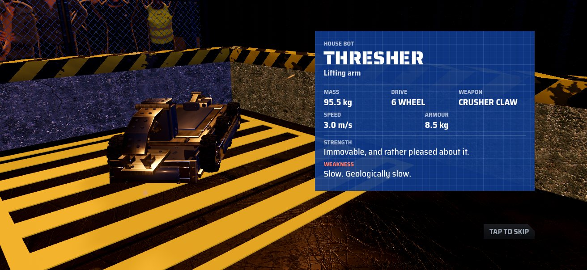
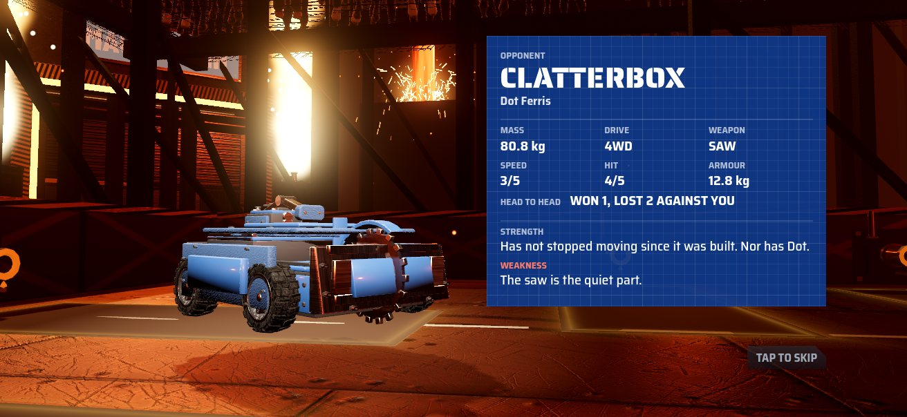
The card at both phone widths
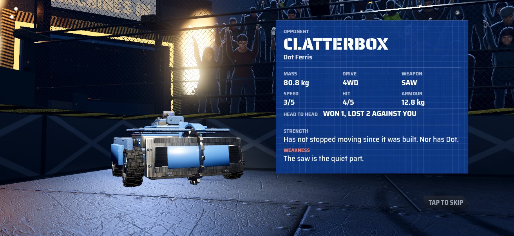
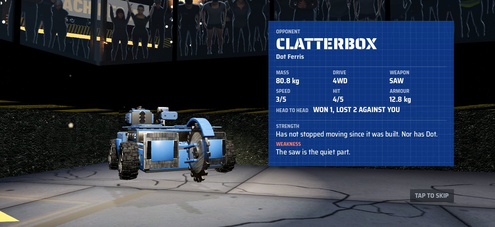
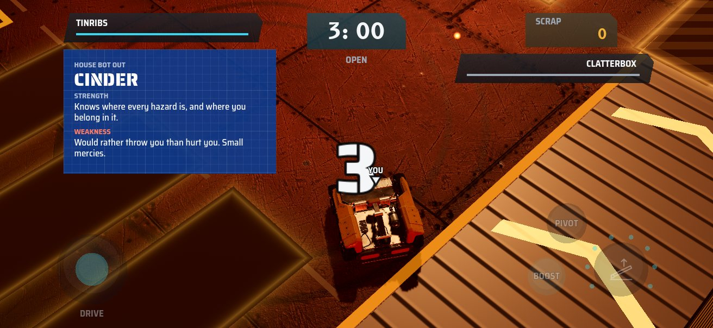
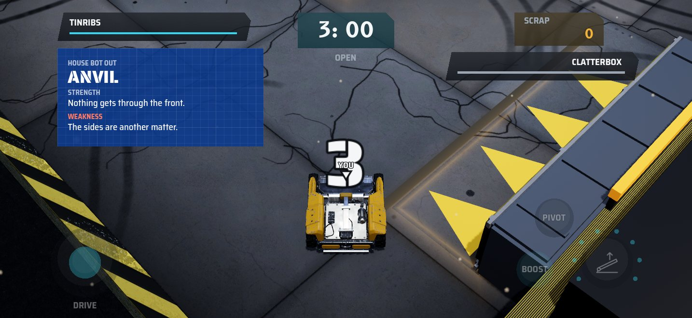
The player's own lines
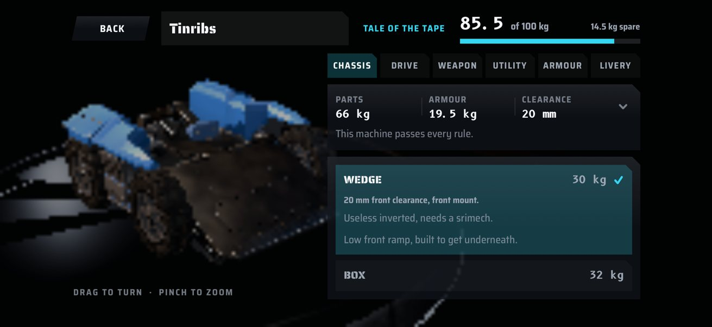
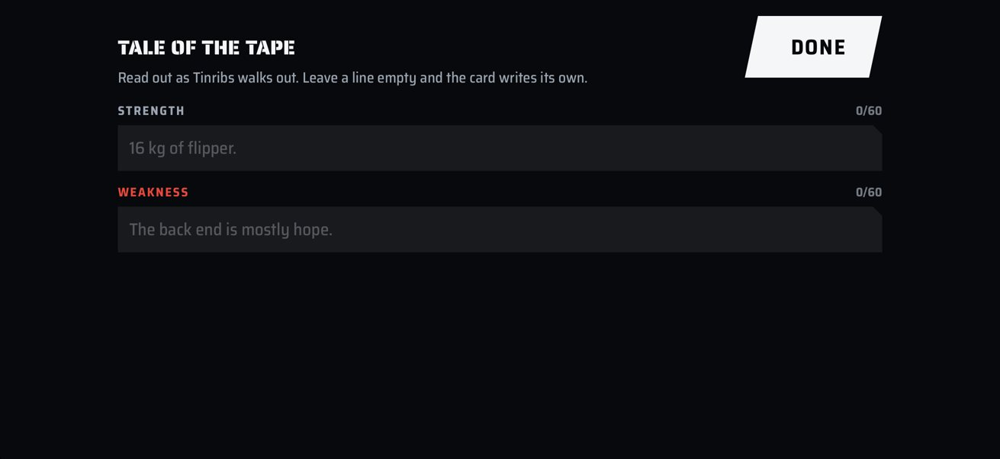
The written lines
| Machine | Strength | Weakness |
|---|---|---|
| Clatterbox | Has not stopped moving since it was built. Nor has Dot. | The saw is the quiet part. |
| Penny Dread | Cheap, quick, and very keen on walls. | Two wheels and a great deal of confidence. |
| Scuttle | Lower than your expectations and twice as patient. | Has never won anything quickly, or tried to. |
| Hob Nail | The same swing every time, until something gives. | Has one idea and is very attached to it. |
| Cold Snap | Works either way up, which is more than most. | Armoured in chopping boards. Ren calls it light. |
| Brass Neck | No moving parts to break. Ivor has checked. | No moving parts to hit you with, either. |
| Marrow | Once it has hold, it is in no hurry to let go. | Has to catch you first, and is in no hurry about that. |
| Tollgate | Nothing gets past without paying. | Tall enough to see coming from the car park. |
| THRESHER (house) | Immovable, and rather pleased about it. | Slow. Geologically slow. |
| GRUDGE (house) | Cooks your electronics from the inside out. | Barely scratches you. It is counting on you panicking. |
| BANDSAW (house) | Fast, light, and fond of walls. | Take away the wall and it loses interest. |
| ANVIL (house) | Nothing gets through the front. | The sides are another matter. |
| CINDER (house) | Knows where every hazard is, and where you belong in it. | Would rather throw you than hurt you. Small mercies. |
Proof and calls
- Hashes identical in the Yard, the Coliseum and the Crush with a rival and a house bot: none = full = short = quick, and a walk-out skipped halfway (
Arena/tests/walkout_test.gd, 88 checks). - Staging call I made: the machine comes out of the arena corner under its gate rather than from inside the gate itself. The apron outside the walls is dark, fenced and full of crowd; every camera there was blocked or black. From the corner the gate, its sign and its pyro stand behind the machine, and it finishes exactly on its mark.
- For you to call: whether the house bot's shot belongs in every first-visit career intro (it adds 1.3 s), and whether a quick fight should walk out at all.